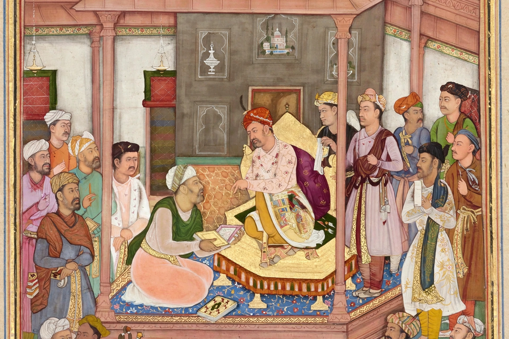

| Abul Fazl ibn Mubarak | |
|---|---|
 | |
| Born | 14 January 1551 Agra, Mughal Empire |
| Died | 22 August 1602 (aged 51) near Narwar |
| Occupation | Historian, courtier, author of the Akbarnama |
| Relatives | Faizi (brother) |
Abu'l-Fazl ibn Mubarak (14 January 1551 – 22 August 1602), also known as Abul Fazl, was the grand vizier and court historian of the Mughal emperor Akbar and the author of the Akbarnama, the official chronicle of Akbar's reign, whose third volume, the Ain-i-Akbari, is a celebrated gazetteer of the empire. He was one of the Navaratnas of Akbar's court and the chief ideologist of Akbar's policy of sulh-i kul.
Abul Fazl was born in Agra, the son of Shaikh Mubarak, a scholar whose liberal views brought him into conflict with the orthodox ulama. Educated in Arabic, Persian, philosophy, and Sufism, Abul Fazl was presented at court in 1574 and quickly won Akbar's confidence, participating in the debates of the Ibadat Khana.
Over three decades Abul Fazl rose to a mansab of 5,000 and commanded armies in the Deccan. His writings developed a theory of kingship in which the emperor, illumined by a divine light (farr-i izadi), stood above sectarian division. He supervised the translation bureau that rendered Sanskrit classics into Persian.
Abul Fazl's influence over Akbar, and his opposition to Prince Salim (the future Jahangir), made him the prince's enemy. In 1602, returning from the Deccan, he was ambushed and beheaded near Narwar by the Bundela chief Vir Singh Deo, acting at Salim's instigation. Akbar is said to have wept at the news: "If Salim wished to be emperor, he might have killed me and spared Abul Fazl."